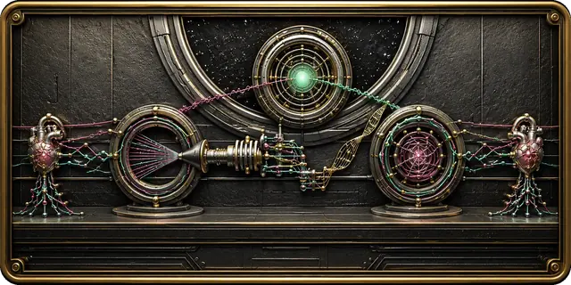

The Solution
Negative-Software Solution
Streamline
Simplify how work moves through your business. We redesign workflows, connect tools, remove repetitive steps, and reduce unnecessary clicks. Strategic workflow automation helps small businesses improve efficiency, reduce errors, shorten response times, and free employees for customers and higher-value work.
Automate
Turn repeatable work into dependable automated processes. We build practical AI automation and business process automation for lead intake, follow-up, data entry, notifications, reporting, document handling, and connected workflows—creating reliable execution that saves time while keeping people in control.
Optimize
Use better data to improve what works. Connect performance reporting, website analytics, conversion optimization, local SEO, search engine optimization, and LLM optimization to reveal patterns and make smarter decisions. Ongoing measurement refines workflows, marketing, customer journeys, and digital systems.
Explore
Start with the problem, not a software package. We identify high-value opportunities in AI consulting, workflow automation, custom website development, SEO, LLM optimization, and system integration, then recommend the smallest practical next step before any large rebuild.
